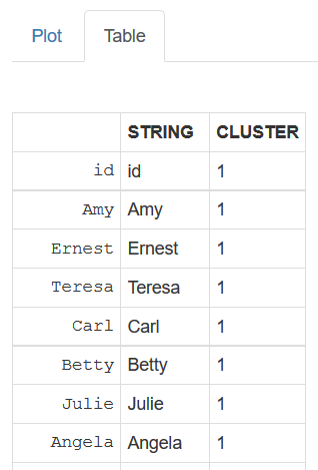
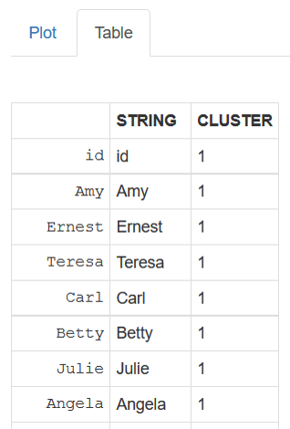

This application let you classify a list of string based in the string distance between character vectors. The distance is a generalized Levenshtein (edit) distance, giving the minimal possibly weighted number of insertions, deletions and substitutions needed to transform one string into another.
- ShinyApp: https://eliezermitrani.shinyapps.io/levenshteintree/
- GitHub repo:

 
